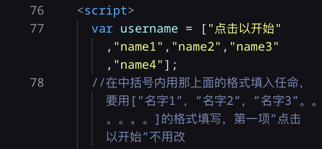
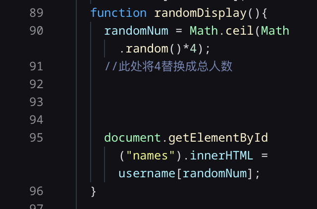

随机抽签
简介
这是我在空闲的时间里写的一个点名器，可以用于学校中抽人回答问题等环节
其原理非常简单。首先建立一个列表（要人手工输入，所以可能有点麻烦），列表中第一项填上“点击以开始”，相当于是列表中的第0项，后面再填入人名或是其他什么抽签用的内容。通过Math.random（）生成一个[0,1)的随机数字，将这个数字乘上人数再向上取整，即为列表中名字的编号（第几个名字），最后再将抽取到的名字显示在框中。
例子
现在总共有4个人，分别为name1，name2，name3和name4。然后按照以下格式填入名字（填写的位置有写注释，第一项就用“点击以开始”，不用改）这个是在代码的第77行，推荐用VScode打开来编辑（当然，直接用记事本也行，就是格式可能会有点乱）。

其中的引号用单引号或者双引号都可以，但一定都要用英文的符号！然后再在后面一个注释的位置填入总人数（比如这里是四个人，所以填4），填写完以后就可以正常使用了

详细的运作过程
Math.random()生成一个[0,1)的随机数字，将这个数字乘以人数（即这里的4），得到的数字的范围是[0,4)，此时再向上取整，得到的数字可能会是1，2，3或4。在html的列表中，第一项即为0，第二项是1，以此类推，总共有四个人名，对应的数字分别就是1，2，3和4，再通过生成的这个数字选择对应的人名，以此达到随机抽取的效果。至于编号为0的“点击以开始”，因为抽不到，所以不会影响结果。那个只是用于最初名字那个位置显示用的。用这个算法抽取的名字理论上就是平均的了。
有了上面的最基本的算法后，再通过检测用户是否点击了按钮，第一次点击就开始循环往复地运行上面的算法，再次按下就停止，达到随机抽取的效果
本项目已开源至github
点击查看
返回